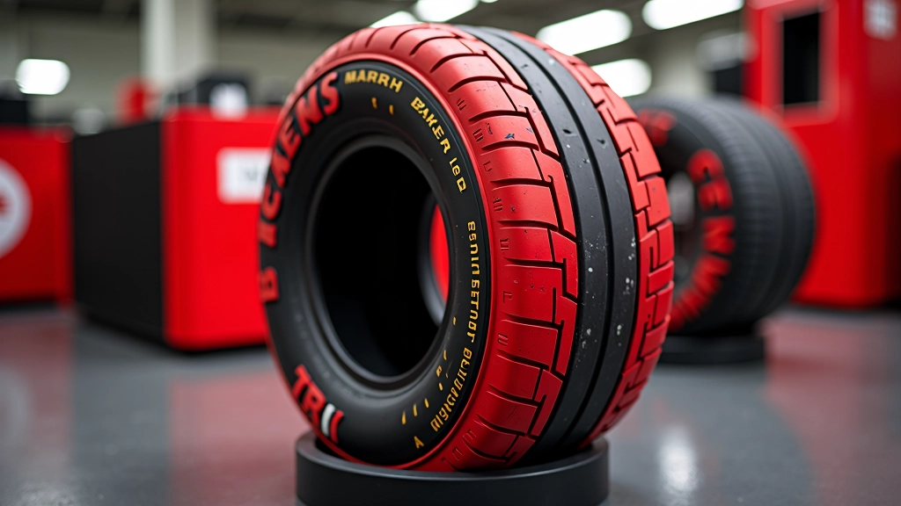
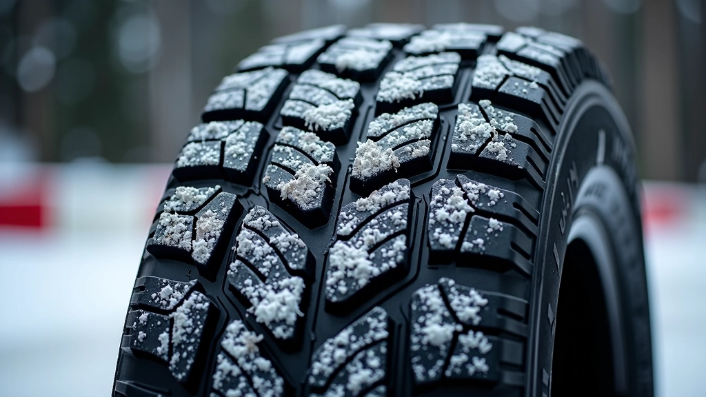
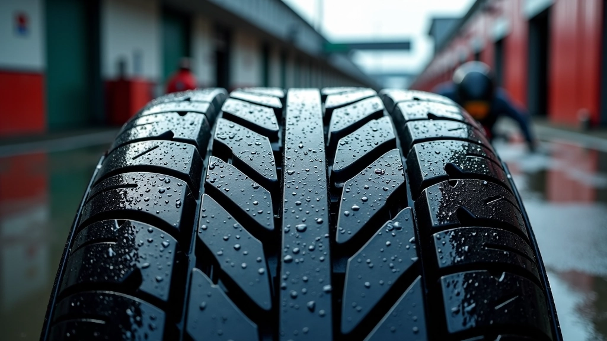
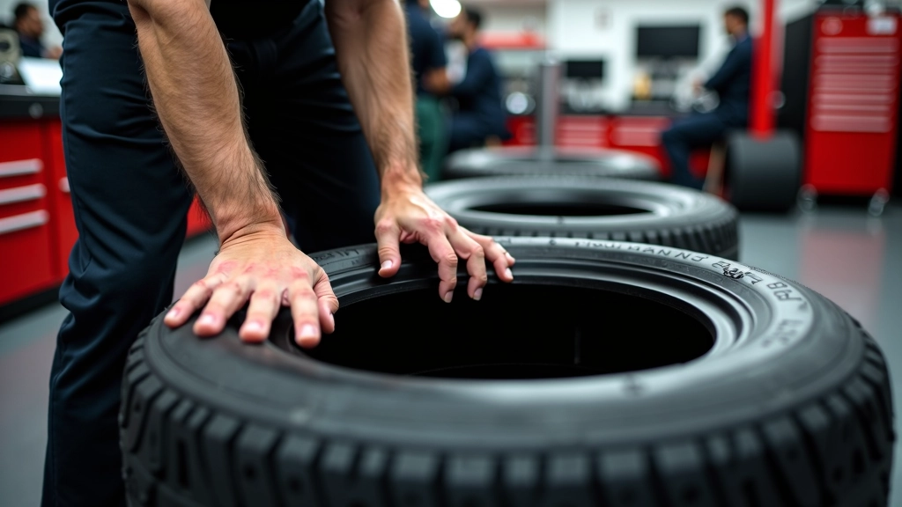

ضغط الإطارات وتأثيره على الأداء
شرح تفصيلي لكيفية قياس وتعديل ضغط الإطارات للحصول على أفضل التماسك والتوازن.

دليل عملي شامل لفهم الفروقات بين أنواع الإطارات المختلفة واختيار ما يناسب ظروف السباق والطقس

فريق التحرير والمراجعة
كتبه فريق جريب تراك التحريري، المتخصص في تقديم إرشادات عملية وموثوقة حول إدارة الإطارات والتماسك في الكارتينج.
الإطار ليس مجرد قطعة مطاط. إنه التواصل الوحيد بين سيارتك والحلبة. الفرق بين الإطار الصحيح والخاطئ قد يكون الفارق بين الفوز والتخلف، وبين السيطرة والانزلاق.
كل نوع إطار مصمّم لظروف محددة. بعضها يتفوّق في الحرارة، وآخر في البرودة. البعض يُعطيك تماسكاً فوري، والبعض الآخر يحتاج إلى وقت ليصل إلى درجة الحرارة المثالية. هنا يكمن السر — فهم ما تحتاجه الحلبة وما تحتاج إليه سيارتك.
الإطارات الصيفية مصنوعة من مزيج مطاطي أصلب. هذا يعني تماسك أفضل في الحرارة والسرعات العالية. لكن هناك مقابل — عندما تنخفض درجة الحرارة، تصبح صلبة جداً وتفقد القبضة.
استخدم الإطارات الصيفية عندما تكون درجة حرارة الحلبة فوق 15 درجة مئوية. في معظم السباقات الصيفية والربيعية، هذا هو الخيار الأمثل. تحصل على استجابة فوريّة ودقة عالية في الدوران.
الشيء المهم: الإطارات الصيفية تحتاج إلى تسخين صحيح. لا تتوقع الأداء الكاملة من أول دورة. استغرق 3-5 دورات حتى تصل الإطارات إلى درجة حرارة التشغيل المثالية (80-100 درجة مئوية).


عندما تنخفض درجات الحرارة، الإطارات الصيفية تُصبح خطيرة. المطاط يتجمد عملياً ويفقد المرونة. هنا يأتي دور الإطارات الشتوية — مصنوعة من مزيج أطرى يبقى مرناً حتى في درجات الحرارة المنخفضة.
الإطارات الشتوية لها أخاديد أعمق وأكثر تعقيداً. هذا يُحسّن التماسك على الأسطح الباردة والرطبة. عندما تنخفض درجة الحرارة تحت 15 درجة مئوية، الإطارات الشتوية هي خيارك الوحيد الذكي.
لاحظ أنّ الإطارات الشتوية قد تكون أبطأ قليلاً في ظروف جافة وحارة. لكن في البرودة، الفرق ضخم — قد تصل إلى 0.5-1 ثانية لكل دورة مقارنة بالإطارات الصيفية.
فوق 15 درجة = صيفي. تحت 15 درجة = شتوي. البينية معقدة — اختبر أولاً.
الحلبة الرطبة تحتاج إطارات بأخاديد أعمق. جرب الشتوية حتى لو كان الطقس دافئاً.
الإطارات الشتوية تدفأ أسرع. الصيفية تحتاج مزيداً من الدورات لتصل لأفضل حالة.
الإسفلت الناعم يفضّل الصيفي. الحجري والخشن يفضّل الشتوي.
المطر يغيّر كل شيء. الحلبة الرطبة بشدة تحتاج إطارات متخصصة. إطارات المطر لها أخاديد عميقة جداً — تصل إلى 3-4 ملم. هذا يُساعد على تصريف المياه بسرعة وتجنب الانزلاق المائي.
لا تستخدم إطارات المطر على حلبة جافة. الأداء ستكون سيئة جداً — ستشعر بأن السيارة ثقيلة وبطيئة. استخدمها فقط عندما تكون الحلبة رطبة حقاً. والشيء المهم — تأكد من أن الماء يتصرف بشكل صحيح. لا فائدة من الإطار الأفضل إذا كانت قنوات التصريف في الحلبة مسدودة.

قياس درجة حرارة السطح مباشرة هو الأفضل. استخدم مقياس حرارة بالأشعة تحت الحمراء. إذا لم يكن متاحاً، انظر إلى درجة حرارة الهواء وأضف حوالي 10-15 درجة للحلبة في الشمس.
هل الحلبة جافة تماماً؟ رطبة قليلاً؟ مبللة بالماء؟ هل هناك بقع جافة وأخرى رطبة؟ كل هذا يؤثر على الاختيار. حتى لو كانت درجة الحرارة مناسبة للإطار الصيفي، الرطوبة قد تجعل الشتوي خياراً أفضل.
في الممارسة العملية، افعل بضع دورات تجريبية بالإطار المختار. أنت تحتاج إلى الشعور به أولاً. بعض الإطارات تشعر أسرع من غيرها، وبعضها أكثر أماناً. الاختبار يعطيك صورة حقيقية.
لا تتردد في التبديل إذا لم يكن الاختيار صحيحاً. إذا كنت تشعر بأن الإطارات تنزلق أو لا تسخن بشكل صحيح، قد تحتاج إلى خيار مختلف. الملاحظة والتعديل جزء من اللعبة.

كثير من الناشئين يختارون الإطار بناءً على الشهرة أو السعر فقط. لكن هذا خطأ. الإطار الغالي ليس دائماً الأفضل لظروفك المحددة. والإطار الرخيص قد يكون خياراً ذكياً إذا كان يناسب الظروف.
خطأ آخر شائع: استخدام نفس الإطار طوال السنة. هذا ليس عملياً. الظروف تتغير. في الربيع والخريف، قد تحتاج إلى إطار مختلف عن الصيف. راقب درجات الحرارة وكن مستعداً للتبديل.
وأخيراً، لا تغفل عن الصيانة. حتى الإطار الأفضل سيؤدي سيئاً إذا كان الضغط خاطئاً أو التوازن غير صحيح. تحقق من الضغط قبل كل سباق.
المعلومات الواردة في هذا الدليل هي إرشادات عملية عامة بناءً على خبرة في الكارتينج. قد تختلف الظروف من حلبة إلى أخرى ومن سيارة إلى أخرى. دائماً استشر مع فريق الميكانيكا المتخصص وأتبع تعليمات الحلبة والسلطات المختصة. اختبر أي اختيار جديد بعناية قبل المشاركة في سباق رسمي.
اختيار الإطار المناسب ليس علماً معقداً، لكنه يحتاج إلى فهم أساسي للظروف والخيارات المتاحة. كل نوع إطار مصمّم لدور محدد. الصيفي للحرارة، الشتوي للبرودة، والمطر للرطوبة.
ابدأ باختبار وملاحظة. راقب كيف تشعر السيارة بالإطار المختار. استمع إلى تعليقات فريقك. مع الوقت، ستطور حدساً لما يناسب كل موقف. وهذا هو الفرق بين سائق عادي وسائق يعرف لعبته حقاً.
لا تتردد في التجربة والتعديل. كل حلبة فريدة. كل سباق مختلف. والإطار الذي فاز معك مرة قد لا يكون الأفضل المرة التالية. كن مرناً. كن ملاحظاً. وستجد أن اختيار الإطار الصحيح سيصبح طبيعياً.
شرح تفصيلي لكيفية قياس وتعديل ضغط الإطارات للحصول على أفضل التماسك والتوازن.

تعلم كيفية قراءة نمط تآكل الإطار لتحديد مشاكل المحاذاة والتوازن.

استراتيجيات متقدمة لموازنة إطاراتك وتحسين استجابة السيارة.